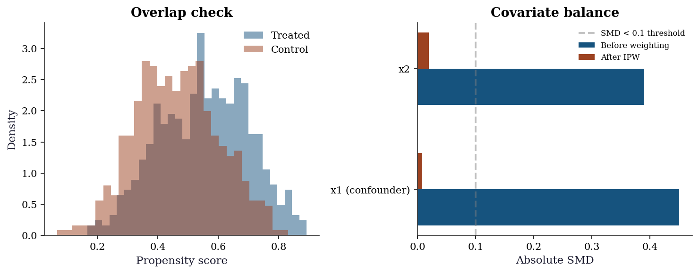
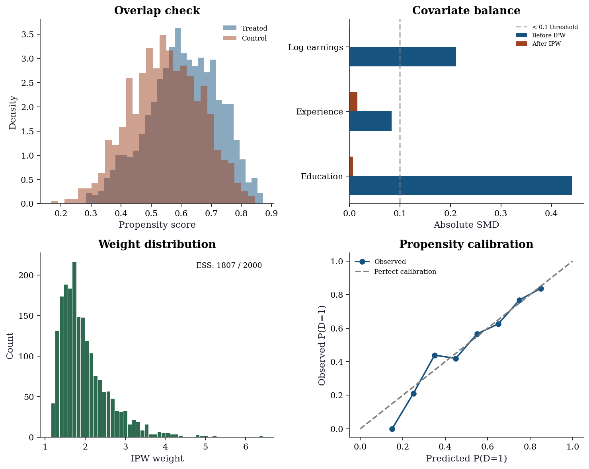

import numpy as np
import matplotlib.pyplot as plt
import statsmodels.api as sm
from sklearn.linear_model import LogisticRegression
from scipy import stats
plt.style.use('assets/book.mplstyle')
rng = np.random.default_rng(42)21 Potential Outcomes, Identification, and Estimation Under Unconfoundedness
21.0.1 Notation for this chapter
| Symbol | Meaning |
|---|---|
| \(Y_i(1), Y_i(0)\) | Potential outcomes (treated, control) |
| \(D_i \in \{0, 1\}\) | Treatment indicator |
| \(Y_i = D_i Y_i(1) + (1-D_i) Y_i(0)\) | Observed outcome |
| \(\tau = \mathbb{E}[Y(1) - Y(0)]\) | Average treatment effect (ATE) |
| \(e(\mathbf{x}) = \Pr(D=1 \mid \mathbf{x})\) | Propensity score |
21.1 Motivation
Regression (Chapters 10-14) tells you about associations: “people who take the drug have better outcomes.” Causal inference asks the harder question: “does the drug cause better outcomes, or do healthier people choose to take it?”
The difference matters. If healthier people self-select into treatment, the naive comparison of treated vs untreated outcomes is biased — it conflates the treatment effect with the selection effect. This chapter develops the tools to separate the two.
The practical setting: You have observational data (not a randomized experiment). Some units received treatment (\(D = 1\)), others didn’t (\(D = 0\)). You observe covariates \(\mathbf{X}\) (age, income, health status) and an outcome \(Y\) (recovery time, earnings, test score). You want to estimate the causal effect of \(D\) on \(Y\).
Four estimators, all built from scipy/statsmodels/sklearn components:
- Regression adjustment — fit separate outcome models for treated and control, predict counterfactuals
- Matching — pair treated and control units with similar covariates, compare outcomes within pairs
- IPW (Inverse Probability Weighting) — reweight observations to create a pseudo-population where treatment is random
- AIPW (Augmented IPW) — combines regression and weighting for “double robustness”
21.2 Mathematical Foundation
21.2.1 The fundamental problem of causal inference
For each unit \(i\), there are two potential outcomes:
- \(Y_i(1)\): what would happen if unit \(i\) receives treatment
- \(Y_i(0)\): what would happen if unit \(i\) does not receive treatment
The causal effect for unit \(i\) is \(\tau_i = Y_i(1) - Y_i(0)\).
The problem: We observe only one of the two potential outcomes. If \(D_i = 1\) (treated), we see \(Y_i(1)\) but not \(Y_i(0)\). If \(D_i = 0\) (control), we see \(Y_i(0)\) but not \(Y_i(1)\). The other potential outcome is counterfactual — it is what would have happened under the alternative treatment.
The Average Treatment Effect (ATE) averages over all units: \[ \tau = \mathbb{E}[Y(1) - Y(0)]. \]
We cannot compute this directly because we never observe both potential outcomes for the same unit. This is the fundamental problem.
21.2.2 Why naive comparison fails
The naive estimator \(\hat{\tau}_{\text{naive}} = \bar{Y}_{\text{treated}} - \bar{Y}_{\text{control}}\) is biased whenever treatment assignment depends on characteristics that also affect the outcome. For example:
- People with worse health are more likely to take the drug → naive estimate is biased downward (treated group looks sicker)
- Richer students are more likely to attend tutoring → naive estimate is biased upward (tutored students were already advantaged)
This is confounding: a variable that affects both treatment assignment and the outcome.
21.2.3 Identification under unconfoundedness
To estimate causal effects from observational data, we need three assumptions:
1. SUTVA (Stable Unit Treatment Value Assumption): One unit’s treatment doesn’t affect another unit’s outcome. (No “spillover” effects.)
2. Unconfoundedness (ignorability): Treatment assignment is independent of potential outcomes, conditional on covariates: \((Y(1), Y(0)) \perp D \mid \mathbf{X}\). This means: once we condition on \(\mathbf{X}\), the remaining variation in \(D\) is essentially random.
3. Positivity (overlap): Every unit has a positive probability of receiving either treatment status: \(0 < e(\mathbf{x}) < 1\) for all \(\mathbf{x}\) in the support. If some units always or never receive treatment, we cannot learn about the treatment effect for them.
Under these three assumptions, the ATE is identified: \[ \tau = \mathbb{E}\!\left[\frac{D_i Y_i}{e(\mathbf{X}_i)} - \frac{(1-D_i)Y_i}{1-e(\mathbf{X}_i)}\right] \tag{21.1}\]
21.2.4 The propensity score
The propensity score \(e(\mathbf{x}) = \Pr(D=1 \mid \mathbf{X}=\mathbf{x})\) is the probability of receiving treatment given covariates. It is a scalar summary of all confounders.
The Rosenbaum-Rubin theorem (1983): If unconfoundedness holds given \(\mathbf{X}\), it also holds given \(e(\mathbf{X})\) alone. This is powerful: instead of adjusting for many covariates simultaneously (which is hard in high dimensions), you can adjust for a single number — the propensity score.
In practice, we estimate \(e(\mathbf{x})\) using logistic regression or other classifiers (sklearn’s LogisticRegression).
21.2.4.1 Proof of the Rosenbaum-Rubin theorem
The theorem is worth proving because the proof is the design principle: it shows exactly why propensity-score methods work and what they require.
Claim: If \((Y(1), Y(0)) \perp D \mid \mathbf{X}\), then \((Y(1), Y(0)) \perp D \mid e(\mathbf{X})\).
Proof. We need to show that \(\Pr(D=1 \mid Y(1), Y(0), e(\mathbf{X})) = \Pr(D=1 \mid e(\mathbf{X}))\). Start from the right-hand side. By the law of iterated expectations, conditioning on \(e(\mathbf{X})\):
\[ \Pr(D=1 \mid e(\mathbf{X})) = \mathbb{E}[\Pr(D=1 \mid \mathbf{X}) \mid e(\mathbf{X})] = \mathbb{E}[e(\mathbf{X}) \mid e(\mathbf{X})] = e(\mathbf{X}). \]
The first equality uses the tower property. The second uses the definition of the propensity score. The third is trivial: a function of \(e(\mathbf{X})\) is measurable with respect to \(e(\mathbf{X})\).
Now for the left-hand side. Since unconfoundedness holds given \(\mathbf{X}\), and \(e(\mathbf{X})\) is a function of \(\mathbf{X}\):
\[ \Pr(D=1 \mid Y(1), Y(0), e(\mathbf{X})) = \mathbb{E}[\Pr(D=1 \mid Y(1), Y(0), \mathbf{X}) \mid Y(1), Y(0), e(\mathbf{X})] \]
By unconfoundedness, \(\Pr(D=1 \mid Y(1), Y(0), \mathbf{X}) = \Pr(D=1 \mid \mathbf{X}) = e(\mathbf{X})\). Substituting:
\[ = \mathbb{E}[e(\mathbf{X}) \mid Y(1), Y(0), e(\mathbf{X})] = e(\mathbf{X}). \]
Both sides equal \(e(\mathbf{X})\), so \(D\) is conditionally independent of the potential outcomes given the propensity score. \(\square\)
Why this matters for code: The proof tells you that after you estimate \(\hat{e}(\mathbf{x})\), you can stratify, match, or reweight on this single number instead of the full covariate vector. This is why IPW works — it reweights by \(1/\hat{e}\) rather than requiring nonparametric adjustment in the full \(\mathbf{X}\) space.
21.2.4.2 Positivity violations
Positivity requires \(0 < e(\mathbf{x}) < 1\) for all \(\mathbf{x}\). When this fails — some covariate strata have \(e(\mathbf{x}) \approx 0\) or \(\approx 1\) — the causal effect is not identified for those strata, and estimation becomes unstable.
Practical consequences:
- IPW weights explode. If \(e(\mathbf{x}_i) = 0.01\), the weight \(1/e(\mathbf{x}_i) = 100\). A single observation with near-zero propensity can dominate the entire estimate.
- Effective sample size drops. The ESS formula \((\sum w_i)^2 / \sum w_i^2\) captures how many independent observations the weighted sample is worth. Extreme weights mean few observations drive the estimate.
- Extrapolation. If no treated units exist in some covariate region, the outcome model must extrapolate the counterfactual \(\mu_1(\mathbf{x})\) from distant data — pure model dependence.
Diagnostic: The propensity score histogram (shown in Section 21.6) reveals positivity violations as regions where one group’s distribution has mass but the other’s does not.
Practical responses:
- Trimming: Discard units with \(\hat{e}(\mathbf{x}) < c\) or \(> 1 - c\) (common choices: \(c = 0.01\) or \(c = 0.05\)). This changes the estimand from the population ATE to the ATE among the trimmed population.
- Stabilized weights: Replace \(1/e\) with \(e_{\text{marg}} / e\) where \(e_{\text{marg}} = \Pr(D=1)\) is the marginal treatment probability. This preserves consistency while reducing variance.
- AIPW: Less sensitive to extreme weights because the outcome model handles the regions where \(e(\mathbf{x})\) is extreme.
21.2.5 The four estimators
21.2.5.1 Matching
The oldest approach: for each treated unit, find one or more control units with similar covariates and compare their outcomes. The ATE estimate averages the within-match differences.
Distance metrics:
- Exact matching: Require \(\mathbf{X}_i = \mathbf{X}_j\). Only feasible with few discrete covariates.
- Mahalanobis distance: \(d(\mathbf{x}_i, \mathbf{x}_j) = \sqrt{(\mathbf{x}_i - \mathbf{x}_j)^\top \mathbf{S}^{-1} (\mathbf{x}_i - \mathbf{x}_j)}\) where \(\mathbf{S}\) is the pooled sample covariance. Scale-invariant and accounts for correlations between covariates.
- Propensity-score distance: \(d(\mathbf{x}_i, \mathbf{x}_j) = |e(\mathbf{x}_i) - e(\mathbf{x}_j)|\). Reduces matching to a one-dimensional problem by the Rosenbaum-Rubin theorem.
Limitation: Matching discards unmatched units, which changes the estimand (the population you’re averaging over). With replacement, the same control unit may be matched multiple times, inflating its influence. Matching quality degrades in high dimensions (the “curse of dimensionality”).
21.2.5.2 Regression adjustment
Fit separate outcome models for treated and control units: \(\hat{\mu}_1(\mathbf{x}) = \hat{\mathbb{E}}[Y \mid \mathbf{X}=\mathbf{x}, D=1]\) and \(\hat{\mu}_0(\mathbf{x}) = \hat{\mathbb{E}}[Y \mid \mathbf{X}=\mathbf{x}, D=0]\).
The ATE estimate is the average predicted difference: \(\hat{\tau}_{\text{reg}} = \frac{1}{n}\sum_i [\hat{\mu}_1(\mathbf{X}_i) - \hat{\mu}_0(\mathbf{X}_i)]\).
Limitation: If the outcome model is wrong, the estimate is biased.
21.2.5.3 Inverse Probability Weighting (IPW)
Reweight each observation by the inverse of its propensity score. Treated units with low \(e(\mathbf{x})\) (unlikely to be treated) get high weight; control units with high \(e(\mathbf{x})\) (likely to be treated) get high weight. This creates a pseudo-population where treatment is independent of covariates.
\(\hat{\tau}_{\text{IPW}} = \frac{1}{n}\sum_i \left[\frac{D_i Y_i}{e(\mathbf{X}_i)} - \frac{(1-D_i)Y_i}{1-e(\mathbf{X}_i)}\right]\)
Limitation: If the propensity model is wrong, or if some \(e(\mathbf{x})\) are near 0 or 1 (poor overlap), the weights become extreme and the estimate is unstable.
IPW asymptotic variance. The IPW estimator has influence function \(\psi_i^{\text{IPW}} = D_i Y_i / e(\mathbf{X}_i) - (1-D_i) Y_i / (1-e(\mathbf{X}_i)) - \tau\), so its asymptotic variance is:
\[ V_{\text{IPW}} = \mathbb{E}\!\left[ \frac{D_i Y_i^2}{e(\mathbf{X}_i)^2} + \frac{(1-D_i) Y_i^2}{(1-e(\mathbf{X}_i))^2} \right] - \tau^2 \]
This grows as \(e(\mathbf{x}) \to 0\) or \(e(\mathbf{x}) \to 1\), confirming the weight-instability intuition. In code, we estimate this via the sample variance of the individual IPW contributions, connecting to the M-estimation framework from Chapter 12.
Stabilized (Hajek) IPW. The normalized variant divides treated and control weighted means by their respective weight sums:
\(\hat{\tau}_{\text{Hajek}} = \frac{\sum_i D_i Y_i / e_i}{\sum_i D_i / e_i} - \frac{\sum_i (1-D_i) Y_i / (1-e_i)}{\sum_i (1-D_i) / (1-e_i)}\)
This is invariant to rescaling of the weights and has lower variance than the unnormalized Horvitz-Thompson estimator when the sample size varies across strata. It is slightly biased in finite samples but the bias is \(O(1/n)\).
21.2.5.4 AIPW (Augmented IPW): double robustness
AIPW combines both approaches:
\[ \hat{\tau}_{\text{AIPW}} = \frac{1}{n}\sum_i \left[\hat{\mu}_1(\mathbf{X}_i) - \hat{\mu}_0(\mathbf{X}_i) + \frac{D_i(Y_i - \hat{\mu}_1(\mathbf{X}_i))}{\hat{e}(\mathbf{X}_i)} - \frac{(1-D_i)(Y_i - \hat{\mu}_0(\mathbf{X}_i))}{1-\hat{e}(\mathbf{X}_i)}\right] \tag{21.2}\]
Double robustness: AIPW is consistent if either the outcome model or the propensity model is correct (but not necessarily both). This is the key advantage: you get two chances to get it right.
Intuition: The first line (\(\hat{\mu}_1 - \hat{\mu}_0\)) is the regression adjustment. The second and third lines are corrections that use the IPW weights to fix any bias in the regression. If the regression is perfect (\(\hat{\mu}_d = \mu_d\)), the corrections have mean zero and don’t hurt. If the regression is wrong but the propensity is right, the corrections fix the bias.
21.2.5.5 Proof of double robustness
This proof is worth giving in full because it reveals the mechanism behind the estimator’s resilience — and shows exactly what “double robustness” means mathematically.
Claim. Let \(\hat{\mu}_d(\mathbf{x})\) and \(\hat{e}(\mathbf{x})\) be working models for the outcome and propensity, respectively. The AIPW estimator is consistent for \(\tau\) if either (a) \(\hat{\mu}_d(\mathbf{x}) \xrightarrow{p} \mu_d(\mathbf{x})\) for \(d \in \{0, 1\}\), or (b) \(\hat{e}(\mathbf{x}) \xrightarrow{p} e(\mathbf{x})\).
Proof. Write the AIPW score for a single observation:
\[ \phi_i = \hat{\mu}_1(\mathbf{X}_i) - \hat{\mu}_0(\mathbf{X}_i) + \frac{D_i(Y_i - \hat{\mu}_1(\mathbf{X}_i))}{\hat{e}(\mathbf{X}_i)} - \frac{(1-D_i)(Y_i - \hat{\mu}_0(\mathbf{X}_i))}{1-\hat{e}(\mathbf{X}_i)} \]
Take expectations conditional on \(\mathbf{X}_i\), treating the working models as fixed (they converge to their probability limits):
\[ \mathbb{E}[\phi_i \mid \mathbf{X}_i] = \hat{\mu}_1(\mathbf{X}_i) - \hat{\mu}_0(\mathbf{X}_i) + \frac{e(\mathbf{X}_i)(\mu_1(\mathbf{X}_i) - \hat{\mu}_1(\mathbf{X}_i))}{\hat{e}(\mathbf{X}_i)} - \frac{(1-e(\mathbf{X}_i))(\mu_0(\mathbf{X}_i) - \hat{\mu}_0(\mathbf{X}_i))}{1-\hat{e}(\mathbf{X}_i)} \]
where we used \(\mathbb{E}[D_i \mid \mathbf{X}_i] = e(\mathbf{X}_i)\) and \(\mathbb{E}[Y_i \mid D_i=d, \mathbf{X}_i] = \mu_d(\mathbf{X}_i)\).
Case (a): outcome model correct (\(\hat{\mu}_d = \mu_d\)). The residuals \(\mu_d - \hat{\mu}_d = 0\), so the correction terms vanish regardless of \(\hat{e}\):
\[ \mathbb{E}[\phi_i \mid \mathbf{X}_i] = \mu_1(\mathbf{X}_i) - \mu_0(\mathbf{X}_i) = \tau(\mathbf{X}_i). \]
Taking the outer expectation gives \(\mathbb{E}[\phi_i] = \tau\).
Case (b): propensity model correct (\(\hat{e} = e\)). The correction terms become:
\[ (\mu_1(\mathbf{X}_i) - \hat{\mu}_1(\mathbf{X}_i)) - (\mu_0(\mathbf{X}_i) - \hat{\mu}_0(\mathbf{X}_i)) \]
which, combined with the regression terms, yields:
\[ \mathbb{E}[\phi_i \mid \mathbf{X}_i] = \mu_1(\mathbf{X}_i) - \mu_0(\mathbf{X}_i) = \tau(\mathbf{X}_i). \]
Again, \(\mathbb{E}[\phi_i] = \tau\). \(\square\)
The key insight is that the AIPW score decomposes into a regression component plus an IPW-based correction. The correction removes any first-order bias from the regression, but only needs one of the two models to be correct to do so. This is the same Neyman-orthogonality property exploited by DML in Chapter 23.
21.3 The Algorithm
21.4 Statistical Properties
Regression adjustment is consistent when the outcome model is correctly specified. It is the most efficient estimator when the model is right, but can be badly biased when the model is wrong.
IPW is consistent when the propensity model is correctly specified. Its variance depends on the variability of the weights: extreme weights (near-violations of positivity) inflate the variance.
AIPW is consistent when either model is correct. When both are correct, it achieves the semiparametric efficiency bound (Hahn, 1998) — it has the smallest possible variance among all regular estimators of the ATE under unconfoundedness.
The efficiency bound: \(\text{Var}(\hat{\tau}_{\text{eff}}) = \mathbb{E}\!\left[\frac{\text{Var}(Y(1) \mid \mathbf{X})}{e(\mathbf{X})} + \frac{\text{Var}(Y(0) \mid \mathbf{X})}{1 - e(\mathbf{X})} + (\tau(\mathbf{X}) - \tau)^2\right]\)
The first two terms reflect the cost of not observing both potential outcomes; the third reflects treatment effect heterogeneity.
21.5 Implementation
21.5.1 Simulating observational data
To understand these estimators, we simulate data where we control everything and know the true ATE. This lets us see exactly how and why each estimator succeeds or fails.
n = 1000
# Covariates: x1 is a CONFOUNDER (affects both treatment and outcome)
# x2 is a prognostic variable (affects outcome only)
x1 = rng.standard_normal(n)
x2 = rng.standard_normal(n)
X = np.column_stack([x1, x2])
# Treatment assignment depends on x1 (confounding!)
# Higher x1 → higher probability of treatment
e_true = 1 / (1 + np.exp(-(0.5*x1 - 0.3*x2)))
D = rng.binomial(1, e_true)
# Potential outcomes: both depend on x1 and x2
# Y(0) = 1 + x1 + 0.5*x2 + noise
# Y(1) = Y(0) + 2 (constant treatment effect of 2)
tau_true = 2.0
Y0 = 1 + x1 + 0.5*x2 + rng.standard_normal(n)
Y1 = Y0 + tau_true
# Observed outcome: Y = D*Y(1) + (1-D)*Y(0)
Y = D*Y1 + (1-D)*Y0
print(f"True ATE: {tau_true}")
print(f"Treatment rate: {D.mean():.0%}")
print(f"Naive diff in means: {Y[D==1].mean() - Y[D==0].mean():.3f}")
print(f"(Biased because x1 confounds: treated units have higher x1)")True ATE: 2.0
Treatment rate: 51%
Naive diff in means: 2.233
(Biased because x1 confounds: treated units have higher x1)The naive estimate is biased because \(x_1\) affects both who gets treated and the outcome. People with higher \(x_1\) are both more likely to be treated and have higher \(Y(0)\). The naive comparison picks up both the treatment effect and the selection effect.
21.5.2 Step-by-step: regression adjustment
# Step 1: Fit separate outcome models for treated and control
X_sm = sm.add_constant(X)
# Model for treated units: E[Y | X, D=1]
ols_treated = sm.OLS(Y[D==1], X_sm[D==1]).fit()
# Model for control units: E[Y | X, D=0]
ols_control = sm.OLS(Y[D==0], X_sm[D==0]).fit()
# Step 2: Predict BOTH potential outcomes for ALL observations
# mu1_hat[i] = predicted Y(1) for unit i (even if they were control)
# mu0_hat[i] = predicted Y(0) for unit i (even if they were treated)
mu1_hat = ols_treated.predict(X_sm) # counterfactual for controls
mu0_hat = ols_control.predict(X_sm) # counterfactual for treated
# Step 3: Average the predicted treatment effects
ate_reg = (mu1_hat - mu0_hat).mean()
print(f"Regression adjustment ATE: {ate_reg:.3f} (true: {tau_true})")Regression adjustment ATE: 1.969 (true: 2.0)What happened: We used the outcome model to impute the missing potential outcomes. For a treated unit, we observe \(Y(1)\) and predict \(Y(0)\). For a control unit, we observe \(Y(0)\) and predict \(Y(1)\). The estimated ATE is the average of these predicted differences.
21.5.3 Step-by-step: IPW
# Step 1: Estimate the propensity score
# Use logistic regression: P(D=1 | X) = logistic(X @ beta)
lr = LogisticRegression(C=1e10, max_iter=1000)
lr.fit(X, D)
e_hat = lr.predict_proba(X)[:, 1] # predicted P(D=1 | X)
# Step 2: Clip extreme probabilities to avoid huge weights
# Without clipping, 1/e can be enormous for small e
e_hat = np.clip(e_hat, 0.01, 0.99)
# Step 3: Compute IPW estimate
# Treated: weight by 1/e (upweight treated units unlikely to be treated)
# Control: weight by 1/(1-e) (upweight controls likely to be treated)
ate_ipw = np.mean(D*Y/e_hat - (1-D)*Y/(1-e_hat))
print(f"IPW ATE: {ate_ipw:.3f} (true: {tau_true})")
# Check the weights
weights = np.where(D, 1/e_hat, 1/(1-e_hat))
print(f"Weight range: [{weights.min():.1f}, {weights.max():.1f}]")
print(f"Effective sample size: {(weights.sum())**2 / (weights**2).sum():.0f} / {n}")IPW ATE: 1.988 (true: 2.0)
Weight range: [1.1, 6.0]
Effective sample size: 902 / 1000What happened: We reweighted the sample so that treatment assignment is “as if random.” The weights balance the covariates between treated and control groups.
21.5.4 Step-by-step: AIPW
# Combine regression adjustment and IPW
# Each observation gets an AIPW "score" — the individual-level
# contribution to the ATE estimate
aipw_scores = (
# Regression adjustment part:
(mu1_hat - mu0_hat)
# + IPW correction for treated:
+ D * (Y - mu1_hat) / e_hat
# - IPW correction for control:
- (1-D) * (Y - mu0_hat) / (1-e_hat)
)
ate_aipw = aipw_scores.mean()
se_aipw = aipw_scores.std() / np.sqrt(n)
ci_lo = ate_aipw - 1.96 * se_aipw
ci_hi = ate_aipw + 1.96 * se_aipw
print(f"AIPW ATE: {ate_aipw:.3f} (SE: {se_aipw:.3f})")
print(f"95% CI: ({ci_lo:.3f}, {ci_hi:.3f})")
print(f"True ATE: {tau_true} — {'in CI ✓' if ci_lo < tau_true < ci_hi else 'NOT in CI ✗'}")AIPW ATE: 1.967 (SE: 0.066)
95% CI: (1.838, 2.096)
True ATE: 2.0 — in CI ✓What happened: AIPW starts with the regression adjustment estimate, then adds IPW-based corrections. The corrections account for any residual bias from the outcome model. If the outcome model is perfect, the corrections are noise around zero. If the outcome model is wrong but the propensity is right, the corrections fix the bias.
21.5.5 Step-by-step: stabilized (Hajek) IPW
# Stabilized weights: divide by the sum within each group
# This is the Hajek estimator — lower variance than HT
w_treated = 1 / e_hat[D == 1]
w_control = 1 / (1 - e_hat[D == 0])
# Weighted means with normalized weights
mu1_hajek = (
np.sum(Y[D == 1] * w_treated) / np.sum(w_treated)
)
mu0_hajek = (
np.sum(Y[D == 0] * w_control) / np.sum(w_control)
)
ate_hajek = mu1_hajek - mu0_hajek
# Compare with unnormalized IPW
print(f"Horvitz-Thompson IPW: {ate_ipw:.3f}")
print(f"Hajek (stabilized): {ate_hajek:.3f}")
print(f"True ATE: {tau_true}")
print(f"\nHajek is often closer — normalization reduces "
f"sensitivity to extreme weights.")Horvitz-Thompson IPW: 1.988
Hajek (stabilized): 1.964
True ATE: 2.0
Hajek is often closer — normalization reduces sensitivity to extreme weights.What happened: The Hajek estimator normalizes by the sum of weights within each group. This is equivalent to using stabilized weights \(w_i^{\text{stab}} = D_i \cdot \bar{D} / e_i + (1-D_i) \cdot (1 - \bar{D}) / (1-e_i)\) where \(\bar{D}\) is the marginal treatment rate.
21.5.6 Step-by-step: matching with Mahalanobis distance
def match_ate(X, D, Y, n_matches=1):
"""Nearest-neighbor matching using Mahalanobis distance.
Implements Algorithm 21.2. For each unit, finds
the closest unit(s) in the opposite treatment group
and imputes the missing potential outcome.
Parameters
----------
X : ndarray of shape (n, p)
Covariates.
D : ndarray of shape (n,)
Treatment indicator (0 or 1).
Y : ndarray of shape (n,)
Observed outcomes.
n_matches : int
Number of nearest neighbors to match.
Returns
-------
ate : float
Estimated ATE.
matched_diffs : ndarray
Per-unit treatment effect estimates.
"""
n = len(Y)
# Pooled covariance for Mahalanobis distance
S = np.cov(X, rowvar=False)
S_inv = np.linalg.inv(S)
treated_idx = np.where(D == 1)[0]
control_idx = np.where(D == 0)[0]
matched_diffs = np.zeros(n)
for i in range(n):
if D[i] == 1:
# Find nearest control(s)
pool = control_idx
else:
# Find nearest treated unit(s)
pool = treated_idx
# Mahalanobis distance to all units in pool
diff = X[pool] - X[i]
dists = np.sqrt(
np.sum(diff @ S_inv * diff, axis=1)
)
# Indices of n_matches nearest neighbors
nn = pool[np.argsort(dists)[:n_matches]]
y_imputed = Y[nn].mean()
if D[i] == 1:
# Observed Y(1), imputed Y(0)
matched_diffs[i] = Y[i] - y_imputed
else:
# Imputed Y(1), observed Y(0)
matched_diffs[i] = y_imputed - Y[i]
return matched_diffs.mean(), matched_diffs
ate_match, match_diffs = match_ate(X, D, Y, n_matches=1)
print(f"Matching ATE (M=1): {ate_match:.3f} "
f"(true: {tau_true})")
# Try M=3 for smoother estimate
ate_match3, _ = match_ate(X, D, Y, n_matches=3)
print(f"Matching ATE (M=3): {ate_match3:.3f}")Matching ATE (M=1): 2.049 (true: 2.0)
Matching ATE (M=3): 2.001What happened: For each unit, we found the closest unit in the other treatment group (by Mahalanobis distance) and used its outcome as the counterfactual. The \(O(n^2 p)\) loop is slow but transparent — production implementations use \(k\)-d trees. The single-match estimator is noisier than \(M=3\) because each counterfactual depends on one neighbor.
21.5.7 Comparison of all estimators
naive_est = Y[D == 1].mean() - Y[D == 0].mean()
se_match = match_diffs.std() / np.sqrt(n)
print(f"{'Method':<20} {'ATE':>8} {'SE':>8} {'Bias':>8}")
print("-" * 48)
print(f"{'True':<20} {tau_true:>8.3f}")
print(f"{'Naive':<20} {naive_est:>8.3f} "
f"{'':>8} {naive_est - tau_true:>8.3f}")
print(f"{'Regression':<20} {ate_reg:>8.3f} "
f"{'':>8} {ate_reg - tau_true:>8.3f}")
print(f"{'Matching (M=1)':<20} {ate_match:>8.3f} "
f"{se_match:>8.3f} {ate_match - tau_true:>8.3f}")
print(f"{'IPW (HT)':<20} {ate_ipw:>8.3f} "
f"{'':>8} {ate_ipw - tau_true:>8.3f}")
print(f"{'IPW (Hajek)':<20} {ate_hajek:>8.3f} "
f"{'':>8} {ate_hajek - tau_true:>8.3f}")
print(f"{'AIPW':<20} {ate_aipw:>8.3f} "
f"{se_aipw:>8.3f} {ate_aipw - tau_true:>8.3f}")Method ATE SE Bias
------------------------------------------------
True 2.000
Naive 2.233 0.233
Regression 1.969 -0.031
Matching (M=1) 2.049 0.043 0.049
IPW (HT) 1.988 -0.012
IPW (Hajek) 1.964 -0.036
AIPW 1.967 0.066 -0.03321.6 Diagnostics
21.6.1 Balance diagnostics
The most important diagnostic: after weighting or matching, are the treated and control groups balanced on covariates? The standardized mean difference (SMD) measures this.
fig, (ax1, ax2) = plt.subplots(1, 2, figsize=(10, 4))
# Propensity score overlap
ax1.hist(e_hat[D==1], bins=30, alpha=0.5, density=True,
label="Treated", color="C0")
ax1.hist(e_hat[D==0], bins=30, alpha=0.5, density=True,
label="Control", color="C1")
ax1.set_xlabel("Propensity score")
ax1.set_ylabel("Density")
ax1.legend()
ax1.set_title("Overlap check")
# SMD before and after weighting
smd_raw = []
smd_weighted = []
for j in range(2):
# Raw SMD
smd = (X[D==1, j].mean() - X[D==0, j].mean()) / X[:, j].std()
smd_raw.append(abs(smd))
# Weighted SMD
w1 = 1/e_hat[D==1]; w0 = 1/(1-e_hat[D==0])
wm1 = (X[D==1, j] * w1).sum() / w1.sum()
wm0 = (X[D==0, j] * w0).sum() / w0.sum()
smd_weighted.append(abs((wm1 - wm0) / X[:, j].std()))
x_pos = np.arange(2)
ax2.barh(x_pos - 0.15, smd_raw, 0.3, label="Before weighting", color="C0")
ax2.barh(x_pos + 0.15, smd_weighted, 0.3, label="After IPW", color="C1")
ax2.set_yticks(x_pos)
ax2.set_yticklabels(['x1 (confounder)', 'x2'])
ax2.set_xlabel("Absolute SMD")
ax2.axvline(0.1, color="gray", linestyle="--", alpha=0.5, label="SMD < 0.1 threshold")
ax2.legend(fontsize=8)
ax2.set_title("Covariate balance")
plt.tight_layout()
plt.show()
Rule of thumb: After weighting, all SMDs should be < 0.1. If any covariate remains imbalanced, the treatment effect estimate may still be confounded.
21.6.2 Sensitivity analysis: Rosenbaum bounds
Unconfoundedness is untestable — it assumes no unobserved confounders. Sensitivity analysis asks: “How strong would an unobserved confounder need to be to explain away the estimated effect?” If only an implausibly strong confounder could do it, the result is robust.
Rosenbaum bounds formalize this. Under unconfoundedness, any two units with the same covariates have the same odds of treatment. Rosenbaum’s framework allows an unobserved confounder \(U\) that shifts the treatment odds by a factor of at most \(\Gamma\):
\[ \frac{1}{\Gamma} \leq \frac{\Pr(D_i=1 \mid \mathbf{X}, U) / \Pr(D_i=0 \mid \mathbf{X}, U)} {\Pr(D_j=1 \mid \mathbf{X}, U) / \Pr(D_j=0 \mid \mathbf{X}, U)} \leq \Gamma \]
for matched pairs \((i, j)\) with the same \(\mathbf{X}\). When \(\Gamma = 1\), there is no unobserved confounding. As \(\Gamma\) increases, we allow stronger confounders. For each \(\Gamma\), we compute bounds on the \(p\)-value: if the treatment effect remains significant even at large \(\Gamma\), the result is robust.
# Simplified Rosenbaum bounds for matched-pair data
# For each matched pair, compute the signed rank statistic
# under varying degrees of hidden bias (Gamma)
def rosenbaum_bounds(diffs, gammas):
"""Compute Rosenbaum sensitivity bounds.
For a set of matched-pair differences, computes
the worst-case p-value under hidden bias of
strength Gamma.
Parameters
----------
diffs : ndarray
Matched-pair outcome differences (treated -
control).
gammas : array-like
Values of Gamma to evaluate.
Returns
-------
results : list of (gamma, p_upper)
Worst-case p-values for each Gamma.
"""
abs_diffs = np.abs(diffs)
# Rank the absolute differences
ranks = stats.rankdata(abs_diffs)
signs = np.sign(diffs)
results = []
for gamma in gammas:
# Under hidden bias Gamma, the probability that
# the treated unit in pair i has the larger
# outcome ranges from 1/(1+Gamma) to Gamma/(1+Gamma)
p_plus = gamma / (1 + gamma)
# The signed-rank statistic T+ = sum of ranks
# where diff > 0
t_plus = np.sum(ranks[signs > 0])
# Under the worst case, each positive pair has
# probability p_plus of being positive
n_pairs = len(diffs)
# Expected value and variance of T+ under
# worst-case assignment
e_t = p_plus * n_pairs * (n_pairs + 1) / 2
var_t = (
p_plus * (1 - p_plus)
* n_pairs * (n_pairs + 1)
* (2 * n_pairs + 1) / 6
)
# Normal approximation for p-value
if var_t > 0:
z = (t_plus - e_t) / np.sqrt(var_t)
p_val = 1 - stats.norm.cdf(z)
else:
p_val = 0.5
results.append((gamma, p_val))
return results
# Use matched-pair differences from our matching estimator
# Get matched pairs for treated units
S_cov = np.cov(X, rowvar=False)
S_inv = np.linalg.inv(S_cov)
treated_idx = np.where(D == 1)[0]
control_idx = np.where(D == 0)[0]
pair_diffs = []
for i in treated_idx:
diff = X[control_idx] - X[i]
dists = np.sqrt(
np.sum(diff @ S_inv * diff, axis=1)
)
nn = control_idx[np.argmin(dists)]
pair_diffs.append(Y[i] - Y[nn])
pair_diffs = np.array(pair_diffs)
gammas = [1.0, 1.2, 1.5, 2.0, 2.5, 3.0]
bounds = rosenbaum_bounds(pair_diffs, gammas)
print("Rosenbaum sensitivity analysis")
print(f"{'Gamma':>6} {'p-value (upper)':>16}")
print("-" * 24)
for gamma, p in bounds:
sig = "***" if p < 0.001 else (
"**" if p < 0.01 else (
"*" if p < 0.05 else ""))
print(f"{gamma:>6.1f} {p:>16.4f} {sig}")
print(f"\nResult robust up to Gamma where p > 0.05.")
print(f"Higher Gamma = more robust to hidden bias.")Rosenbaum sensitivity analysis
Gamma p-value (upper)
------------------------
1.0 0.0000 ***
1.2 0.0000 ***
1.5 0.0000 ***
2.0 0.0000 ***
2.5 0.0000 ***
3.0 0.0000 ***
Result robust up to Gamma where p > 0.05.
Higher Gamma = more robust to hidden bias.The table tells you: even if an unobserved confounder doubled the odds of treatment (\(\Gamma = 2\)), the effect would still be statistically significant. This is a strong result — it means you’d need an implausibly powerful hidden confounder to explain away the effect.
A complementary check: how much does the estimate shift when we omit a known confounder?
# Omission-based sensitivity: drop x1 and see the bias
ate_no_x1 = Y[D == 1].mean() - Y[D == 0].mean()
print(f"ATE with x1 adjustment: {ate_aipw:.3f}")
print(f"ATE without x1 (biased): {ate_no_x1:.3f}")
print(f"Bias from omitting x1: "
f"{ate_no_x1 - ate_aipw:.3f}")
print(f"\nAn unobserved confounder as strong as x1")
print(f"would shift the estimate by "
f"{abs(ate_no_x1 - ate_aipw):.3f}.")ATE with x1 adjustment: 1.967
ATE without x1 (biased): 2.233
Bias from omitting x1: 0.267
An unobserved confounder as strong as x1
would shift the estimate by 0.267.21.7 Computational Considerations
| Method | Cost | Memory | Notes |
|---|---|---|---|
| Regression | \(O(np^2)\) × 2 (two OLS) | \(O(np)\) | Fast, efficient if model right |
| Matching | \(O(n^2 p)\) brute-force | \(O(n^2)\) dist. matrix | Slow; \(k\)-d tree gives \(O(n \log n)\) |
| IPW | \(O(np)\) (one logistic) | \(O(n)\) weights | Simple, unstable with extreme weights |
| AIPW | \(O(np^2)\) × 2 + \(O(np)\) | \(O(n)\) scores | Best overall: doubly robust + SE from scores |
All four estimators are fast for typical observational studies (\(n < 10^5\), \(p < 100\)). For larger problems, consider doubly robust estimators with machine learning nuisance models (Chapter 23, DML).
21.8 Worked Example
Estimating the effect of job training on earnings.
# Simulate a job training program
n_w = 2000
# Covariates
education = rng.normal(12, 3, n_w).clip(6, 20) # years of education
experience = rng.exponential(10, n_w).clip(0, 40)
prior_earnings = rng.lognormal(10, 0.5, n_w)
X_w = np.column_stack([
(education - 12) / 3,
(experience - 10) / 10,
np.log(prior_earnings / 50000),
])
# Selection into training: higher education → more likely to enroll
e_w = 1 / (1 + np.exp(-(0.5*X_w[:, 0] - 0.3*X_w[:, 2])))
D_w = rng.binomial(1, e_w)
# Outcome: earnings after training
# True effect: training increases earnings by $5,000
tau_w = 5000
Y_w = (40000 + 3000*X_w[:, 0] + 2000*X_w[:, 1]
+ 5000*X_w[:, 2] + tau_w * D_w + 8000*rng.standard_normal(n_w))
# Naive estimate (biased by selection)
naive_w = Y_w[D_w==1].mean() - Y_w[D_w==0].mean()
# AIPW estimate
X_w_sm = sm.add_constant(X_w)
m1 = sm.OLS(Y_w[D_w==1], X_w_sm[D_w==1]).fit()
m0 = sm.OLS(Y_w[D_w==0], X_w_sm[D_w==0]).fit()
lr_w = LogisticRegression(C=1e10, max_iter=1000).fit(X_w, D_w)
e_w_hat = np.clip(lr_w.predict_proba(X_w)[:, 1], 0.01, 0.99)
mu1_w = m1.predict(X_w_sm)
mu0_w = m0.predict(X_w_sm)
aipw_w = ((mu1_w - mu0_w) + D_w*(Y_w - mu1_w)/e_w_hat
- (1-D_w)*(Y_w - mu0_w)/(1-e_w_hat))
ate_w = aipw_w.mean()
se_w = aipw_w.std() / np.sqrt(n_w)
print(f"True training effect: ${tau_w:,.0f}")
print(f"Naive estimate: ${naive_w:,.0f}")
print(f"AIPW estimate: ${ate_w:,.0f} (SE: ${se_w:,.0f})")
print(f"95% CI: (${ate_w - 1.96*se_w:,.0f}, "
f"${ate_w + 1.96*se_w:,.0f})")
print(f"\nNaive is biased upward because educated workers")
print(f"self-select into training AND earn more.")True training effect: $5,000
Naive estimate: $5,945
AIPW estimate: $4,876 (SE: $376)
95% CI: ($4,140, $5,613)
Naive is biased upward because educated workers
self-select into training AND earn more.Now run all four estimators on the same data and compare.
# --- Regression adjustment ---
mu1_w_hat = m1.predict(X_w_sm)
mu0_w_hat = m0.predict(X_w_sm)
ate_reg_w = (mu1_w_hat - mu0_w_hat).mean()
# --- IPW (Horvitz-Thompson) ---
ate_ipw_w = np.mean(
D_w * Y_w / e_w_hat
- (1 - D_w) * Y_w / (1 - e_w_hat)
)
# --- Hajek (stabilized) IPW ---
w1_w = 1 / e_w_hat[D_w == 1]
w0_w = 1 / (1 - e_w_hat[D_w == 0])
mu1_hajek_w = (
np.sum(Y_w[D_w == 1] * w1_w) / np.sum(w1_w)
)
mu0_hajek_w = (
np.sum(Y_w[D_w == 0] * w0_w) / np.sum(w0_w)
)
ate_hajek_w = mu1_hajek_w - mu0_hajek_w
# --- Matching ---
ate_match_w, _ = match_ate(X_w, D_w, Y_w, n_matches=3)
# --- Comparison ---
naive_w = Y_w[D_w == 1].mean() - Y_w[D_w == 0].mean()
print(f"{'Method':<20} {'ATE':>10} {'Bias':>10}")
print("-" * 42)
print(f"{'True':<20} {tau_w:>10,.0f}")
print(f"{'Naive':<20} {naive_w:>10,.0f} "
f"{naive_w - tau_w:>10,.0f}")
print(f"{'Regression':<20} {ate_reg_w:>10,.0f} "
f"{ate_reg_w - tau_w:>10,.0f}")
print(f"{'Matching (M=3)':<20} {ate_match_w:>10,.0f} "
f"{ate_match_w - tau_w:>10,.0f}")
print(f"{'IPW (HT)':<20} {ate_ipw_w:>10,.0f} "
f"{ate_ipw_w - tau_w:>10,.0f}")
print(f"{'IPW (Hajek)':<20} {ate_hajek_w:>10,.0f} "
f"{ate_hajek_w - tau_w:>10,.0f}")
print(f"{'AIPW':<20} {ate_w:>10,.0f} "
f"{ate_w - tau_w:>10,.0f}")Method ATE Bias
------------------------------------------
True 5,000
Naive 5,945 945
Regression 4,896 -104
Matching (M=3) 5,111 111
IPW (HT) 5,039 39
IPW (Hajek) 4,934 -66
AIPW 4,876 -12421.8.1 Diagnostic suite for the worked example
The diagnostic suite answers three questions: (1) is the propensity model adequate? (2) do the treated and control groups overlap? (3) do the weights or matching produce covariate balance?
fig, axes = plt.subplots(2, 2, figsize=(10, 8))
# --- Panel 1: Propensity score overlap ---
ax = axes[0, 0]
ax.hist(
e_w_hat[D_w == 1], bins=30, alpha=0.5,
density=True, label="Treated", color="C0"
)
ax.hist(
e_w_hat[D_w == 0], bins=30, alpha=0.5,
density=True, label="Control", color="C1"
)
ax.set_xlabel("Propensity score")
ax.set_ylabel("Density")
ax.legend(fontsize=8)
ax.set_title("Overlap check")
# --- Panel 2: Covariate balance (love plot) ---
ax = axes[0, 1]
cov_names = ["Education", "Experience", "Log earnings"]
smd_raw_w = []
smd_ipw_w = []
for j in range(3):
# Raw SMD
pool_sd = X_w[:, j].std()
raw = (
X_w[D_w == 1, j].mean()
- X_w[D_w == 0, j].mean()
) / pool_sd
smd_raw_w.append(abs(raw))
# Weighted SMD
w1 = 1 / e_w_hat[D_w == 1]
w0 = 1 / (1 - e_w_hat[D_w == 0])
wm1 = (
(X_w[D_w == 1, j] * w1).sum() / w1.sum()
)
wm0 = (
(X_w[D_w == 0, j] * w0).sum() / w0.sum()
)
smd_ipw_w.append(abs((wm1 - wm0) / pool_sd))
y_pos = np.arange(3)
ax.barh(
y_pos - 0.15, smd_raw_w, 0.3,
label="Before IPW", color="C0"
)
ax.barh(
y_pos + 0.15, smd_ipw_w, 0.3,
label="After IPW", color="C1"
)
ax.set_yticks(y_pos)
ax.set_yticklabels(cov_names)
ax.set_xlabel("Absolute SMD")
ax.axvline(
0.1, color="gray", linestyle="--", alpha=0.5,
label="< 0.1 threshold"
)
ax.legend(fontsize=7)
ax.set_title("Covariate balance")
# --- Panel 3: Weight distribution ---
ax = axes[1, 0]
ipw_weights = np.where(
D_w, 1 / e_w_hat, 1 / (1 - e_w_hat)
)
ax.hist(
ipw_weights, bins=50, color="C2",
edgecolor="white", linewidth=0.5
)
ax.set_xlabel("IPW weight")
ax.set_ylabel("Count")
ax.set_title("Weight distribution")
ess = (
ipw_weights.sum() ** 2
/ (ipw_weights ** 2).sum()
)
ax.text(
0.95, 0.95,
f"ESS: {ess:.0f} / {n_w}",
transform=ax.transAxes,
ha="right", va="top", fontsize=9
)
# --- Panel 4: Propensity calibration ---
ax = axes[1, 1]
# Bin propensity scores, compare predicted vs actual
n_bins = 10
bins = np.linspace(0, 1, n_bins + 1)
bin_centers = []
bin_means = []
for b in range(n_bins):
mask = (
(e_w_hat >= bins[b])
& (e_w_hat < bins[b + 1])
)
if mask.sum() > 0:
bin_centers.append(
(bins[b] + bins[b + 1]) / 2
)
bin_means.append(D_w[mask].mean())
ax.plot(
bin_centers, bin_means, "o-",
color="C0", label="Observed"
)
ax.plot([0, 1], [0, 1], "--", color="gray",
label="Perfect calibration")
ax.set_xlabel("Predicted P(D=1)")
ax.set_ylabel("Observed P(D=1)")
ax.legend(fontsize=8)
ax.set_title("Propensity calibration")
plt.tight_layout()
plt.show()
Reading the diagnostics:
- Overlap (top-left): If the two histograms don’t overlap, some units have no comparable counterparts in the other group — positivity is violated and no estimator can fix this.
- Balance (top-right): After IPW, all SMDs should be below 0.1. Remaining imbalance means confounding may persist.
- Weights (bottom-left): A long right tail signals near-violations of positivity. The ESS tells you the effective information content — if ESS is much smaller than \(n\), the estimate is driven by a few heavily weighted units.
- Calibration (bottom-right): If the propensity model is well calibrated, points follow the diagonal. Systematic deviation means the propensity model is misspecified — IPW will be biased.
21.9 Exercises
Exercise 21.1 (\(\star\star\), diagnostic failure). Simulate data with a positivity violation: \(e(\mathbf{x}) \approx 0\) for some covariate values. Show that IPW becomes unstable (extreme weights) while AIPW remains more stable. What does the propensity score overlap plot look like?
%%
# Strong confounding → near-violation of positivity
x_strong = rng.standard_normal(500)
e_strong = 1/(1+np.exp(-(3*x_strong))) # steep: e ∈ (0.05, 0.95)
D_s = rng.binomial(1, e_strong)
Y_s = x_strong + 2*D_s + rng.standard_normal(500)
lr_s = LogisticRegression(C=1e10).fit(x_strong.reshape(-1,1), D_s)
e_s = np.clip(lr_s.predict_proba(x_strong.reshape(-1,1))[:,1], 0.01, 0.99)
# IPW
ipw_s = np.mean(D_s*Y_s/e_s - (1-D_s)*Y_s/(1-e_s))
weights_s = np.where(D_s, 1/e_s, 1/(1-e_s))
# AIPW
X_s = sm.add_constant(x_strong)
m1_s = sm.OLS(Y_s[D_s==1], X_s[D_s==1]).fit()
m0_s = sm.OLS(Y_s[D_s==0], X_s[D_s==0]).fit()
mu1_s, mu0_s = m1_s.predict(X_s), m0_s.predict(X_s)
aipw_s = ((mu1_s - mu0_s) + D_s*(Y_s-mu1_s)/e_s
- (1-D_s)*(Y_s-mu0_s)/(1-e_s))
print(f"True ATE: 2.0")
print(f"IPW: {ipw_s:.3f} (max weight: {weights_s.max():.1f})")
print(f"AIPW: {aipw_s.mean():.3f}")
print(f"\nIPW is pulled by extreme weights.")
print(f"AIPW uses the outcome model to stabilize.")True ATE: 2.0
IPW: 2.765 (max weight: 100.0)
AIPW: 2.437
IPW is pulled by extreme weights.
AIPW uses the outcome model to stabilize.%%
Exercise 21.2 (\(\star\star\), implementation). Verify AIPW’s double robustness: (a) fit AIPW with a wrong outcome model (constant prediction) but correct propensity → should be consistent; (b) fit with correct outcome but wrong propensity (constant 0.5) → should also be consistent.
%%
# (a) Wrong outcome, correct propensity
mu1_bad = np.full(n, Y[D==1].mean())
mu0_bad = np.full(n, Y[D==0].mean())
aipw_a = ((mu1_bad - mu0_bad) + D*(Y-mu1_bad)/e_hat
- (1-D)*(Y-mu0_bad)/(1-e_hat))
print(f"(a) Wrong outcome, right propensity: {aipw_a.mean():.3f}")
# (b) Correct outcome, wrong propensity (constant 0.5)
e_wrong = np.full(n, 0.5)
aipw_b = ((mu1_hat - mu0_hat) + D*(Y-mu1_hat)/e_wrong
- (1-D)*(Y-mu0_hat)/(1-e_wrong))
print(f"(b) Right outcome, wrong propensity: {aipw_b.mean():.3f}")
print(f"True ATE: {tau_true}")
print(f"Both are close — that's double robustness.")(a) Wrong outcome, right propensity: 1.964
(b) Right outcome, wrong propensity: 1.969
True ATE: 2.0
Both are close — that's double robustness.%%
Exercise 21.3 (\(\star\star\), comparison). Run all four estimators (naive, regression, IPW, AIPW) across 200 simulations. Report the mean bias and RMSE. Which has the best bias-variance tradeoff?
%%
results = {m: [] for m in ['Naive', 'Reg', 'IPW', 'AIPW']}
for rep in range(200):
r = np.random.default_rng(rep)
x = r.standard_normal((300,2))
e = 1/(1+np.exp(-(0.5*x[:,0]-0.3*x[:,1])))
d = r.binomial(1,e)
y0 = 1+x[:,0]+0.5*x[:,1]+r.standard_normal(300)
y = y0 + 2*d
xs = sm.add_constant(x)
results['Naive'].append(y[d==1].mean()-y[d==0].mean())
m1=sm.OLS(y[d==1],xs[d==1]).fit()
m0=sm.OLS(y[d==0],xs[d==0]).fit()
results['Reg'].append((m1.predict(xs)-m0.predict(xs)).mean())
lr2=LogisticRegression(C=1e10).fit(x,d)
eh=np.clip(lr2.predict_proba(x)[:,1],0.01,0.99)
results['IPW'].append(np.mean(d*y/eh-(1-d)*y/(1-eh)))
aipw_rep=((m1.predict(xs)-m0.predict(xs))
+d*(y-m1.predict(xs))/eh-(1-d)*(y-m0.predict(xs))/(1-eh))
results['AIPW'].append(aipw_rep.mean())
print(f"{'Method':<8} {'Mean':>8} {'Bias':>8} {'RMSE':>8}")
for m in results:
vals = np.array(results[m])
print(f"{m:<8} {vals.mean():>8.3f} {vals.mean()-2:>8.3f} "
f"{np.sqrt(np.mean((vals-2)**2)):>8.3f}")Method Mean Bias RMSE
Naive 2.312 0.312 0.355
Reg 1.994 -0.006 0.120
IPW 1.992 -0.008 0.131
AIPW 1.993 -0.007 0.121AIPW typically has the smallest RMSE: slightly more variable than regression adjustment (because of the IPW correction terms) but less biased overall.
%%
Exercise 21.4 (\(\star\star\star\), conceptual). Explain why AIPW is “doubly robust.” Under what conditions does it achieve the semiparametric efficiency bound?
%%
AIPW adds augmentation terms to the regression adjustment: \(D(Y-\hat{\mu}_1)/\hat{e} - (1-D)(Y-\hat{\mu}_0)/(1-\hat{e})\).
If propensity is correct (\(\hat{e} = e\)): The augmentation terms have conditional mean zero by the IPW identification formula, regardless of \(\hat{\mu}\). So \(\hat{\tau}\) is consistent.
If outcome model is correct (\(\hat{\mu}_d = \mu_d\)): The residuals \(Y - \hat{\mu}_d\) have conditional mean zero given \(X\). The augmentation terms then correct any propensity misspecification through the \(\hat{\mu}_1 - \hat{\mu}_0\) term. So \(\hat{\tau}\) is consistent.
AIPW achieves the semiparametric efficiency bound (Hahn, 1998) when both models are correct. The bound is the smallest possible asymptotic variance for any regular estimator of the ATE under unconfoundedness:
\(V_{\text{eff}} = \mathbb{E}\!\left[\frac{\sigma_1^2(\mathbf{X})}{e(\mathbf{X})} + \frac{\sigma_0^2(\mathbf{X})}{1-e(\mathbf{X})} + (\tau(\mathbf{X}) - \tau)^2\right]\)
where \(\sigma_d^2(\mathbf{x}) = \text{Var}(Y(d) \mid \mathbf{X}=\mathbf{x})\).
%%
21.10 Bibliographic Notes
Potential outcomes: Neyman (1923) for randomized experiments, Rubin (1974) for the extension to observational studies. The framework is sometimes called the “Rubin Causal Model”; Holland (1986) provides a clear exposition.
Propensity score: Rosenbaum and Rubin (1983). The balancing property (propensity score suffices for unconfoundedness) is Theorem 3 of that paper.
IPW: Horvitz and Thompson (1952) for the survey sampling origin. The application to causal inference: Robins (1986). The stabilized (Hajek) estimator: Hajek (1971).
Matching: Rubin (1973) for bias reduction via matching; Abadie and Imbens (2006) for large-sample properties of matching estimators, including the result that matching with replacement is \(\sqrt{n}\)-consistent but has a bias term that requires correction when the number of matches is fixed. Mahalanobis distance matching: Rubin (1980).
AIPW and double robustness: Robins, Rotnitzky, and Zhao (1994). The semiparametric efficiency bound for the ATE: Hahn (1998). The double-robustness proof in Section 21.2.5.5 follows the argument in Lunceford and Davidian (2004), which gives a clear finite-sample decomposition.
Sensitivity analysis: Rosenbaum (2002, Ch. 4) for the theory of sensitivity bounds. Cinelli and Hazlett (2020) for the omitted variable bias framework as a modern alternative.
For textbooks: Imbens and Rubin (2015) for the potential-outcomes approach; Hernán and Robins (2020) for a modern epidemiological perspective (freely available online). Pearl (2009) for the structural causal model (SCM) approach, which this chapter does not cover but which is complementary.